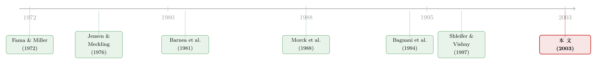

家族不会一走了之，所以债主睡得更安稳
本文读的是 Anderson, Mansi & Reeb (2003, Journal of Financial Economics)：在标普 500 的工业企业里，那些仍由创始家族持股的公司，发债的成本要比非家族公司低约 32 个基点。作者由此给出了第一份证据——股权的所有权结构，不只影响股东与经理之间的冲突，也实实在在地改变了股东与债主之间的那笔账。
1 一个被忽略了二十年的冲突
谈到所有权结构（ownership structure），金融学里有一条被反复打磨的主线：经理持股越多，他和股东的利益就越靠近，公司表现就越好；但持股一旦过头，经理又开始「店大欺客」，利益重新分道扬镳。Morck, Shleifer and Vishny (1988) 和 McConnell and Servaes (1990) 把这条「先升后降」的曲线刻进了教科书。大股东呢？Grossman and Hart (1980)、Shleifer and Vishny (1997) 告诉我们，那些不与管理层沾亲带故的大股东，有足够强的动机去盯着经理，从而缓解经理—股东的代理冲突。
到这里，故事讲的全是同一对矛盾：经理 vs. 股东。
可是，公司里还坐着另一群人——债主。Jensen and Meckling (1976) 早就点破了这层关系里的暗礁：分散持股的股东天生有动机去侵占债主的财富，办法叫资产替代 (asset substitution)，也就是借了钱之后，悄悄把资金投到风险更高、期望回报也更高的项目上。赌赢了，超额收益归股东；赌输了，损失主要砸在债主头上。债主又不是傻子，他们预判到这种动机，于是在发债时就先把利率要高——这笔被推高的融资成本，就是所谓的债务的代理成本 (agency cost of debt)。
那么，一个自然的问题是：既然「大股东能管住经理」这件事被研究了千百遍，「所有权结构能不能管住股东对债主的侵占」，为什么几乎没人碰？
这正是本文要补的那块空白。
2 为什么偏偏盯上「创始家族」
要回答这个问题，作者需要找一种「大而不分散」的股东——他们持股集中、利益绑定、长期在场。环顾公众公司，最干净的样本就是创始家族 (founding family)。
为什么是家族？作者的论证落在两个支点上，请记住它们，因为全文的因果直觉都从这里长出来。
第一，家族在乎的是公司能不能活下去，而不是某一年的股价。 家族的财富高度押在这一家公司身上——作者用 Forbes 富豪榜数据算了一下，平均而言，这些家族把超过 69% 的财富投在了自家公司里。这样一群人，组合极不分散，又指望把公司当作「going concern」传给下一代，而不是当成一笔趁活着花掉的财富 (Casson, 1999; Chami, 1999，思想源头可追到 Becker 1974, 1981)。当公司价值与股东价值发生背离时，家族更可能选择前者——也就是说，他们没那么强的动机去为了股东的短期收益而牺牲公司的长期存续。而「保住公司」恰恰也是债主最想要的东西。
第二，家族跑不掉，所以它要脸。 家族在公司里长期、跨代地存在，意味着银行、债主面对的是同一拨人、同一套治理，关系可以在一代代人之间慢慢攒起来。一旦家族今天对债主耍了花招，债主会理性地预期：只要这个家族还在,明天大概率还会再来一次。声誉的账,在家族企业里会算得更长。于是家族有动机维持一个「好债主」的名声。
把这两条合起来，结论呼之欲出：创始家族与债主之间的利益分歧，可能没有「分散的、原子化的股东」与债主之间那么严重。 如果真是这样，家族企业就该享受更低的债务成本。
这是本文的核心假设。接下来的一切，都是在为这一句话寻找、并加固证据。
注意这里的微妙之处：家族缓解的，是股东对债主的侵占，而不是「家族是更好的经营者」。后面作者会专门把「家族当 CEO」这条经营能力的线索单独拎出来——结论恰恰相反，很有意思。
3 识别策略：把「成本」量成一个价差
这是一篇实证论文，没有结构模型。它的全部说服力，取决于「债务成本」这把尺子量得准不准，以及控制变量有没有把别的解释挡干净。所以这一节值得慢慢读。
被解释变量：债务的成本。 作者不用别的，直接用收益率价差 (yield spread, 记作 Spread)——公司全部在外流通债券的加权平均到期收益率，减去相同久期的国债到期收益率。这是固定收益文献里衡量债务风险溢价的标准做法 (Duffie, 1998)。国债收益率取自纽约联储 H15 的固定期限序列，遇到没有对应期限的，用 Nelson and Siegel (1987) 的函数形式插值。
这把尺子的好处在于：它直接对应公司再融资时要付的代价，而不是债券持有期回报。作者特意在脚注里跟 Bagnani et al. (1994) 划清界限——后者研究的是 CEO 持股对债券持有期回报的影响，而持有期回报是利率波动的函数，跟「发债贵不贵」是两码事 (Elton and Gruber, 1995)。这一步看似细枝末节，却把本文的「第一份证据」资格守住了。
核心解释变量：是不是家族企业。 作者从公司代理声明 (proxy statements) 里手工收集创始家族的持股比例。难点在于，创始人之后几代，家族开枝散叶，远亲、姻亲常常换了姓氏；作者只能逐家翻公司史（来自 Gale Business Resources、Hoovers、公司新闻稿）来认定谁还算「家族」。考虑到家族控制权未必与持股比例成正比（小股权也可能大控制），主设定用一个二元变量 FamFirm——是家族企业取 1，否则取 0。作者坦承，美国的披露规则可能让家族持股被低估，但这种测量误差是「偏向零」的，反而让二元变量的做法更稳健，也让真实效应只会比估出来的更大、不会更小。
最棘手的一步控制：信用评级。 这里藏着一个识别上的陷阱。作者要控制违约风险，自然要放入信用评级 (Rating，把 Moody's 和标普评级换算成 1–23 的数值后取平均，如 Reeb et al. 2001)。可问题是——评级本身可能已经把「家族持股降低了风险」这件事算进去了。如果直接控制评级，就会把本文想要识别的效应吸走一部分。
作者的处理很漂亮：先把评级对家族持股做一个回归，取残差（记作 Credit），用这个「剔除了家族影响的评级」作为控制变量。这样，评级里属于「家族」的那部分被释放出来，留给了 FamFirm 去解释。
其余控制变量，都有明确的「替代解释」要堵。 家族企业债务便宜，可能根本不是因为缓解了代理冲突，而是别的原因：也许家族监督让经营更好、现金流更足；也许家族厌恶风险、现金流波动更小；也许家族干脆少借钱。作者逐一把它们量化进来：
经营表现，现金流对总资产之比
$$ Perform = \frac{Cashflow}{Assets} $$
公司风险，过去五年现金流（按长期债务标准化）的标准差
$$ Risk = \sqrt{\frac{\sum \left[(Cashflow/Debt) - \overline{(Cashflow/Debt)}\right]^2}{n-1}} $$
杠杆与规模
$$ Leverage = \frac{Debt}{Debt + Equity}, \qquad Size = Ln(Debt + Equity) $$
此外还有债务久期 Duration（Macaulay 久期的加权平均，控制期限与票息差异）、以及用债券「年龄」Age（已发行时长）度量的债券流动性——更新发行的债券更易交易、流动性溢价更低 (Green and Odegaard, 1997)。
把这一长串都按住之后，作者强调：上面那些都解释不了的、唯独「家族缓解代理成本」能解释的那部分，才是落在 FamFirm 系数上的东西。标准误用 White (1980) 的异方差稳健估计。
4 主要结果：32 个基点，以及一条会拐弯的曲线
先看背景数字。全样本里，债务的平均收益率价差是 136 个基点，标准差 110 个基点；家族企业占样本的 30%。
核心结论一句话： 在控制了行业与公司特征之后，家族企业的债务融资成本比非家族企业低约 32 个基点。在一个均值才 136 个基点的价差上，这不是小数——它既统计显著，也经济显著。
但真正让这篇文章站住的，是下一步反转。作者去问：这 32 个基点的好处，是不是随家族持股比例线性增加？答案是否定的。收益不是均匀分布的——
- 家族持股低于 12% 的公司，享受约
43个基点的成本下降； - 家族持股高于 12% 的公司，只剩约
22个基点的下降。
（两者都相对于非家族公司而言。）
这条「先大后小」的曲线，把味道完全讲对了：少量的家族持股就足以把「保住公司、爱惜声誉」的激励灌进治理结构里，债主立刻买账；可一旦家族持股太高、控制权太集中，侵占小股东、甚至向债主施压的另一种力量开始抬头，边际上的好处就被抵消掉了。作者在引言里点名的福特汽车那次资本重组——增强福特家族特别股投票权、被广泛批评为「以牺牲其他索取人为代价讨好家族」——正是这一面的写照。
接着是 CEO 这条线，结论很反直觉。 如果家族缓解代理冲突靠的是「利益绑定」，那家族成员亲自当 CEO，岂不是绑得更紧、债务该更便宜？数据说不。当家族成员出任 CEO 时，债务成本反而比「家族企业但请外部 CEO」更高。而且这笔额外的成本，主要来自创始人的后代，而不是创始人本人。
这把两件事干净地分开了：创始人给公司带来独特的、能增值的本事；后代则更可能拖累表现——也许因为他们靠的是血缘而非岗位资质坐上那个位子。这与 Johnson et al. (1985)（创始人猝逝时股价正向反应）、Morck et al. (1988)（家族 CEO 的老公司 Tobin's Q 更低，且主要是后代而非创始人）、Gomez-Mejia et al. (2001)（家族所有权加剧高管壕沟效应）一脉相承。但关键是——即便控制了 CEO 类型，家族企业整体仍然享受显著更低的债务成本。 「保住公司、爱惜声誉」的那条主渠道，并没有被「后代当 CEO」这条副作用淹没。
最后一块拼图：外部大股东。 作者把另一类监督者——机构投资者等外部 blockholder——放进来对照。这些人更可能是股东价值而非公司价值的坚定拥护者。结果：外部大股东持股对债务成本没有影响。一个解读是，像 Fidelity 这样的机构，手里是高度分散的组合，在多家公司都有大额持仓 (Tufano, 1996)，他们未必是认真的监督者；而创始家族那一份是承诺的、不分散的赌注，才生出了真正盯紧公司的激励。
顺带，本文还替一桩老争论投了一票。债务的代理成本到底由谁承担？Jensen and Meckling (1976) 说股东承担，Barnea et al. (1981) 说债主承担。本文的证据（至少对家族企业而言）站在前者一边：这笔成本是通过更高的债务融资成本，落到了股权索取人头上。
5 文献脉络
把这条线索捋直，能看到一个清晰的接力。
最早的源头是把「股东—债主冲突」讲成数学的两篇：Fama and Miller (1972) 用期权框架——股权是公司资产上的一份看涨期权，公司风险越大、期权越值钱、债权越缩水；Jensen and Meckling (1976) 则用「代理成本」的语言把资产替代问题钉死，成为整条研究的地基。Barnea, Haugen and Senbet (1981) 随后争论这笔成本到底落在谁头上。
中间一段，文献的重心其实跑到了「经理—股东」那一边：Demsetz and Lehn (1985) 谈所有权结构的成因，Morck, Shleifer and Vishny (1988)、McConnell and Servaes (1990) 把持股与公司价值的非线性关系做实，Shleifer and Vishny (1997) 的综述则把大股东监督的逻辑系统化。债主，在这段时间里基本是缺席的。

最接近本文的前哨是 Bagnani et al. (1994)，第一次把 CEO 持股和债券回报挂钩——但用的是持有期回报，与「债务成本」隔了一层。于是 Anderson, Mansi and Reeb (2003) 站到了这个交叉口上：它把「所有权结构」这套成熟工具，第一次干净地对准了股东—债主冲突，用收益率价差这把对的尺子，给出了「股权结构影响债务成本」的第一份证据。沿着同一群作者的脉络，Reeb, Mansi and Allee (2001) 用同样的非临时性公开债数据研究了公司国际化与债务成本——本文的方法论，正是从那里磨出来的。
关于「所有权/治理结构究竟是保护还是伤害债主」这个张力，本博客另有几篇可以对照着读：股东话语权变强反而可能让债主遭殃，见《股东说了算，债主就要遭殃吗？》；而代理成本之债的思想原点，可回到《债务这副药，为什么不能全吃？——重读 Jensen 和 Meckling 五十年》与《现金为什么一定要「还」出去？——四十年后，重读 Jensen 的自由现金流》。
6 评论与延伸（Q&A + 研究方向）
(a) 几个可能的疑问
Q：32 个基点会不会只是「家族企业碰巧信用更好」的假象？
这正是评级残差那一步要堵的漏洞。作者担心信用评级里已经吸收了家族效应，于是先把评级对家族持股回归、取残差再做控制；同时还按住了经营表现、现金流波动、杠杆、规模、久期、流动性。能解释家族债务更便宜的「非代理」故事被逐一控制后，剩下的系数才归给
FamFirm。当然，这仍是观测数据，不是随机实验——下面会谈到这一点。
Q：家族缓解了代理冲突，和「家族是更好的经营者」，怎么区分？
靠 CEO 那条线。如果便宜的债务来自更强的经营，那家族 CEO 应该让债务更便宜；可数据相反——家族 CEO（尤其是后代）让债务更贵。也就是说，「经营能力」这条解释在 CEO 维度上是负的，而「家族整体降低债务成本」在控制 CEO 类型后依然成立。两股力量被数据掰开了。
Q：为什么是 12% 这个拐点，而不是别的数？它稳健吗？
12% 是数据里识别出的分界，不是理论先验。它的意义在于定性结论——低持股段收益更大（约 43bp），高持股段收益缩水（约 22bp）——而不是这个具体数字本身。它把「家族既能护债主、又能在持股过高时反噬」的双重性讲了出来。但读者确实应把 12% 当成样本特征，而非普适常数。
Q：外部大股东「没有效果」，是不是只是样本太小、估不出来？
作者的解读不是「估不准」，而是「机制不同」。机构投资者是高度分散的组合持有人，在多家公司都有大仓位，未必有动机当认真的监督者，且其立场偏向股东价值最大化而非公司价值最大化。与之相对，家族那份是不可分散、跨代承诺的赌注。所以「家族有效、机构无效」本身就是本文要讲的对比，而非噪声。
Q：家族持股可能被低估，这会不会毁掉结论？
反而是个安慰。美国披露规则导致的低估是「偏向零」的测量误差，会让真实效应被稀释。也就是说，真实的家族折扣只会比 32bp 更大、不会更小。这也是作者宁可用二元变量、而非连续持股比例作为主设定的理由之一。
Q：这笔好处到底落进了谁的口袋？
落进了股东。债务更便宜，意味着公司整体融资成本下降——本文据此判断，债务代理成本是由股权索取人通过更高/更低的债务成本来承担的，站在 Jensen-Meckling 一边，而非 Barnea et al. 一边。换句话说，家族「自律」省下的钱，最终是股东受益。
(b) 几个可能的研究问题与提案
1. 把「家族折扣」放进债券二级市场的流动性维度去看。
【经济故事】本文用一级发行视角的收益率价差，但「家族不会一走了之」这件事，理应也让债券在二级市场更易定价、买卖价差更窄——长期、稳定的治理减少了信息不对称。家族折扣里，有多少是「违约风险」降的，又有多少是「流动性溢价」降的？ 【可行性】中。需要 TRACE 之类的逐笔成交数据来构造流动性度量，识别上可用同一发行人不同债券、控制评级与久期。数据可得，难点在把流动性与违约两条渠道干净分离。
2. 用「代际更替」做一次准自然实验。
【经济故事】本文的横截面比较，最大软肋是内生性——什么样的公司「碰巧」保留了家族控制？一个更干净的设计是盯住创始人到后代的权力交接这一事件：如果家族 CEO（尤其后代上位）真的推高债务成本，那么在交接前后，同一家公司的收益率价差应出现可观测的跳变。 【可行性】中。需手工构建家族 CEO 更替的事件时点（本文已示范如何从 proxy 与公司史里挖），用事件研究/公司固定效应。样本量是瓶颈，但识别比纯横截面强很多。
3. 把镜头转向外资持有人：跨境债主会不会给家族折扣打折？
【经济故事】本文的声誉机制依赖「债主与家族长期、反复打交道」。可如果债主是外国投资者——信息更远、关系更短、退出更容易——那条声誉渠道是否就失灵了？换句话说，家族折扣会不会随债券投资者基础中外资比例的上升而收窄？ 【可行性】中偏低。需要债券持有人层面的国别数据（如保险、基金的持仓明细），匹配家族治理变量。识别可用持有人结构的外生变动。数据获取是主要障碍，但方向新颖，且正切公司债×外资持有人这一交叉地带。
4. 区分「财务约束」状态下的家族折扣。
【经济故事】当公司逼近财务困境时，股东侵占债主的动机最强（资产替代的期权价值最高）。如果家族的作用真在于压制这种侵占，那家族折扣应在高风险、临近困境的子样本里最大。 【可行性】高。本文已有
Risk、Rating、Leverage等度量，做交互项即可，无需新数据。是最容易先落地验证的一条。
7 我的判断
这篇文章的贡献是「开了一扇门」式的：在所有权结构被研究到几乎没有新意的年代，它把同一套工具第一次稳稳地对准了股东—债主这对被冷落的冲突，并给出了一个量级清楚、方向可信、内部逻辑自洽的答案——32 个基点的家族折扣，一条会在 12% 处拐弯的曲线，以及「创始人增值、后代减值」这组漂亮的对照。尤其值得称道的是评级残差那一步：它显示作者很清楚自己最大的识别威胁在哪里，并认真地去拆。
我的主要担心，仍然是内生性——这是横截面所有权研究的通病。「哪些公司保留了家族控制」本身就是一个被选择的结果：也许是那些现金流更稳、行业更成熟、天然就该债务便宜的公司，更容易把控制权留在家族手里。作者用残差、用一长串控制变量、用「测量误差偏向零」来加固，但没有一个真正外生的冲击。家族 CEO 的代际更替（上面提案 2）会是把这个结论从「相关」推向「因果」的最自然一步。
其次，机制是「捆绑」式论证的：survival 与 reputation 两条渠道在文中并未被分别识别——我们看到的是它们合力的净效应，看不到各占几分。如果未来能用困境距离、用债券二级市场的信息不对称度量，把「降的是违约风险」还是「降的是侵占预期」拆开，这条线索会更有说服力。
但这些都是「站在巨人肩膀上才提得出」的挑剔。作为把一整个文献分支引向新方向的那篇论文，它该有的清晰、克制与诚实，都有了。
参考文献
Anderson, R. C., Mansi, S. A., Reeb, D. M. (2003). Founding family ownership and the agency cost of debt. Journal of Financial Economics 68(2), 263–285.
Bagnani, E., Milonas, N., Saunders, A., Travlos, N. (1994). Managers, owners, and the pricing of risky debt: an empirical analysis. Journal of Finance 49(2), 453–478.
Barnea, A., Haugen, R., Senbet, L. (1981). An equilibrium analysis of debt financing under costly tax arbitrage and agency problems. Journal of Finance 36(3), 569–582.
Demsetz, H., Lehn, K. (1985). The structure of corporate ownership: causes and consequences. Journal of Political Economy 93(6), 1155–1177.
Duffie, G. (1998). The relationship between treasury yields and corporate bond yield spreads. Journal of Finance 53(6), 2225–2241.
Fama, E., Miller, M. (1972). The Theory of Finance. Dryden Press, Hinsdale, IL.
Gomez-Mejia, L., Nunez-Nickel, M., Gutierrez, I. (2001). The role of family ties in agency contracts. Academy of Management Journal 44(1), 81–95.
Green, R., Odegaard, B. (1997). Are there tax effects in the relative pricing of U.S. government bonds. Journal of Finance 52(2), 609–633.
Grossman, S., Hart, O. (1980). Takeover bids, the free-rider problem, and the theory of the corporation. Bell Journal of Economics 11(1), 42–64.
Jensen, M., Meckling, W. (1976). Theory of the firm: managerial behavior, agency costs and ownership structure. Journal of Financial Economics 3(4), 305–360.
Johnson, B., Magee, R., Nagarajan, N., Newman, H. (1985). An analysis of the stock price reaction to sudden executive deaths: implications for the management labor market. Journal of Accounting and Economics 7(1–3), 151–174.
McConnell, J., Servaes, H. (1990). Additional evidence on equity ownership structure, and firm performance. Journal of Financial Economics 27(2), 595–612.
Morck, R., Shleifer, A., Vishny, R. (1988). Management ownership and market valuation: an empirical analysis. Journal of Financial Economics 20, 293–315.
Nelson, C., Siegel, A. (1987). Parsimonious modeling of yield curves. Journal of Business 60(4), 473–489.
Reeb, D., Mansi, S., Allee, J. (2001). Firm internationalization and the cost of debt financing: evidence from non-provisional publicly traded debt. Journal of Financial and Quantitative Analysis 36(3), 395–414.
Shleifer, A., Vishny, R. (1997). A survey of corporate governance. Journal of Finance 52(2), 737–783.
Tufano, P. (1996). Who manages risk? An empirical examination of risk management practices in the gold mining industry. Journal of Finance 51(4), 1097–1137.
White, H. (1980). A heteroskedasticity-consistent covariance matrix estimator and a direct test for heteroskedasticity. Econometrica 48(4), 817–838.